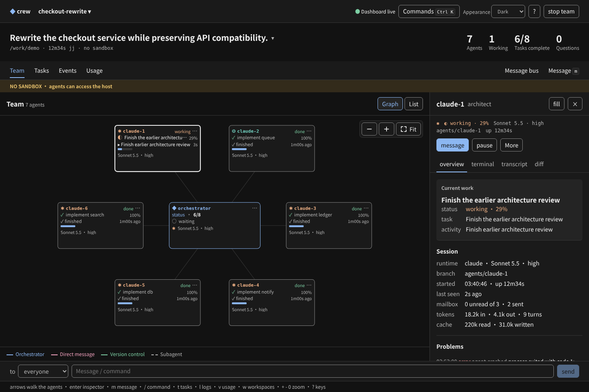
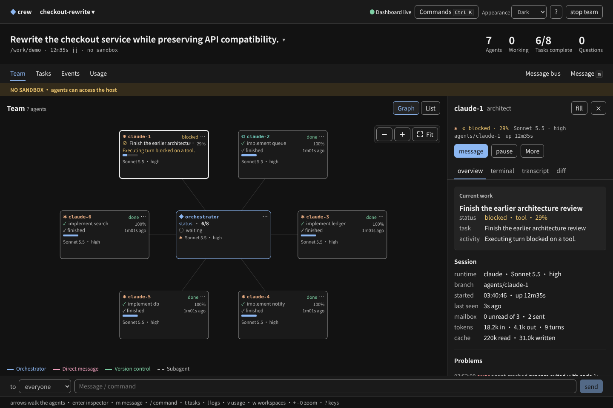
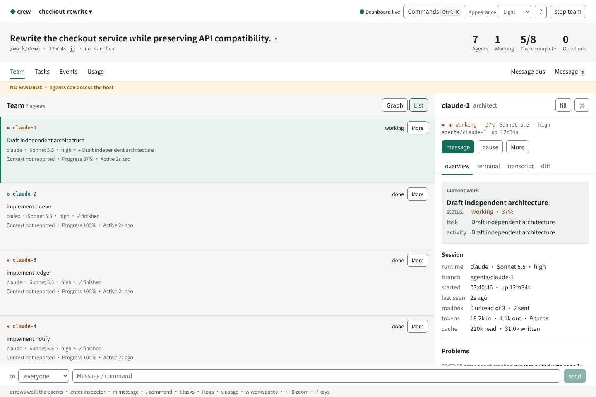
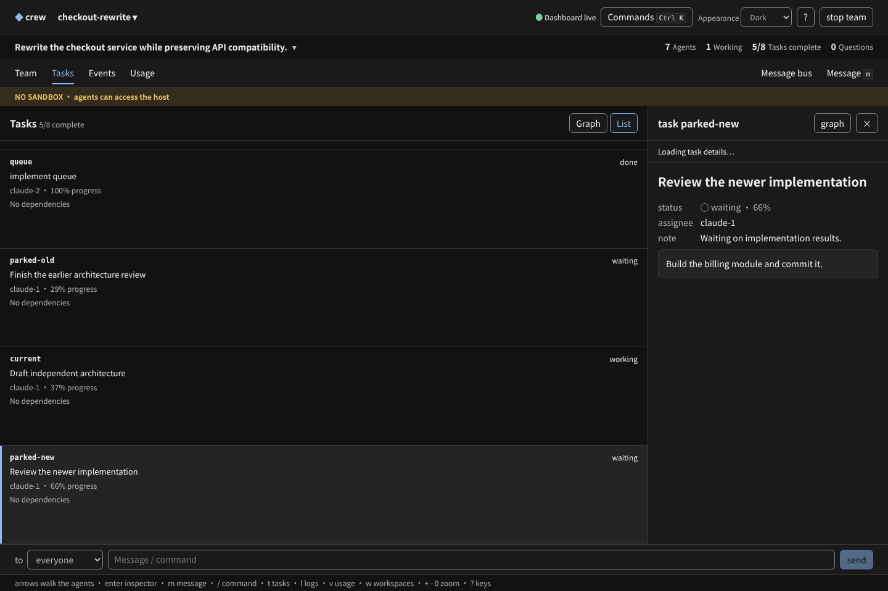
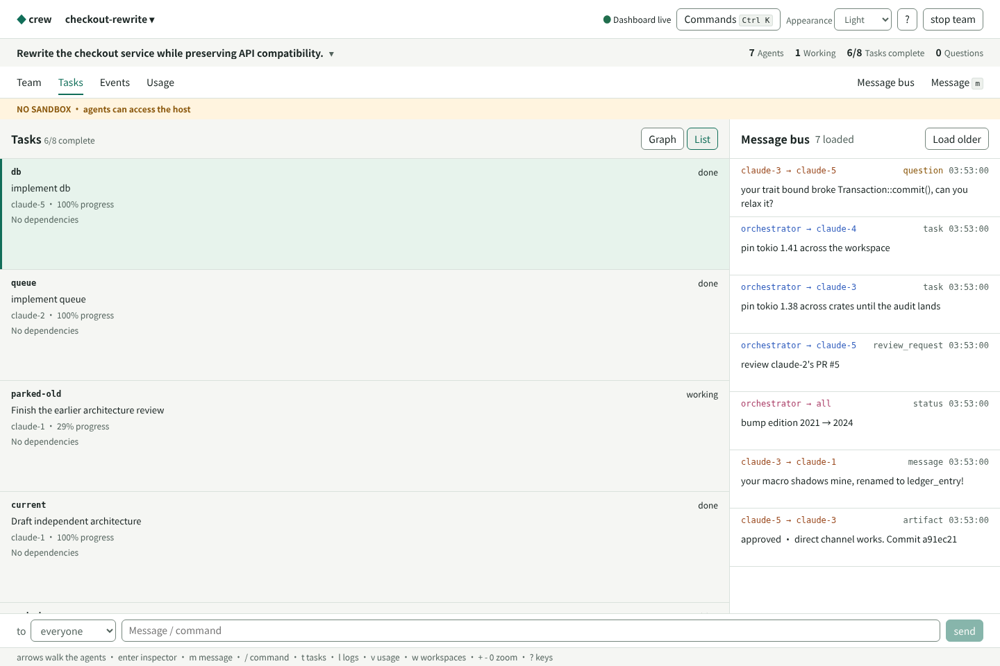

Actual production components, deterministic fixture content. Bundle 9d2e838747fefae2684c66dd56ae854215446bbd; source fnv1a64:f22f3cf5ad74d25f. Six retained samples from graph's 30 captures. Capture measurements.




